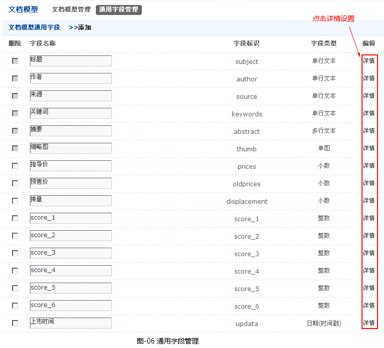
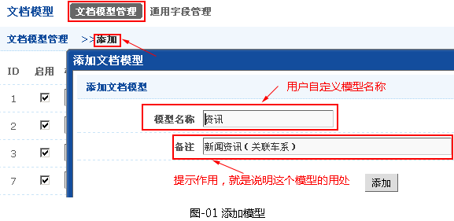
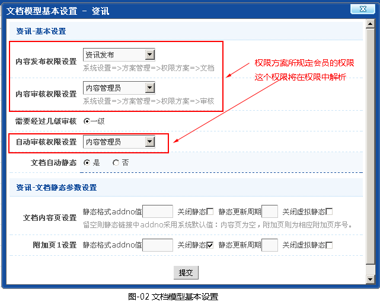
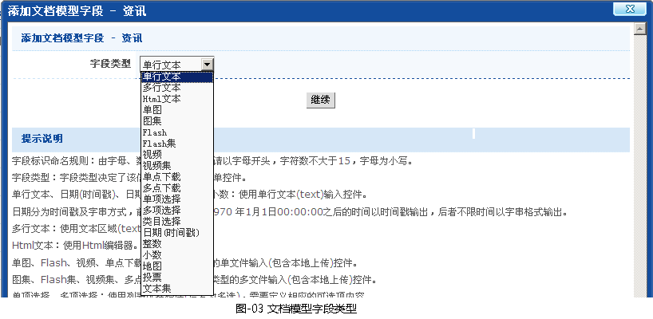
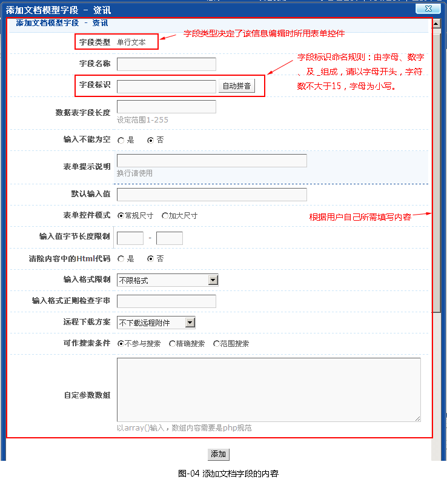
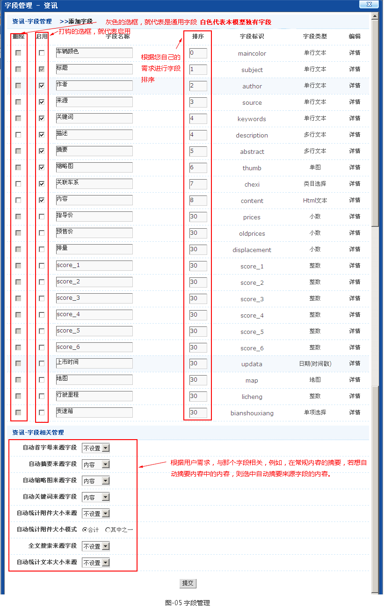
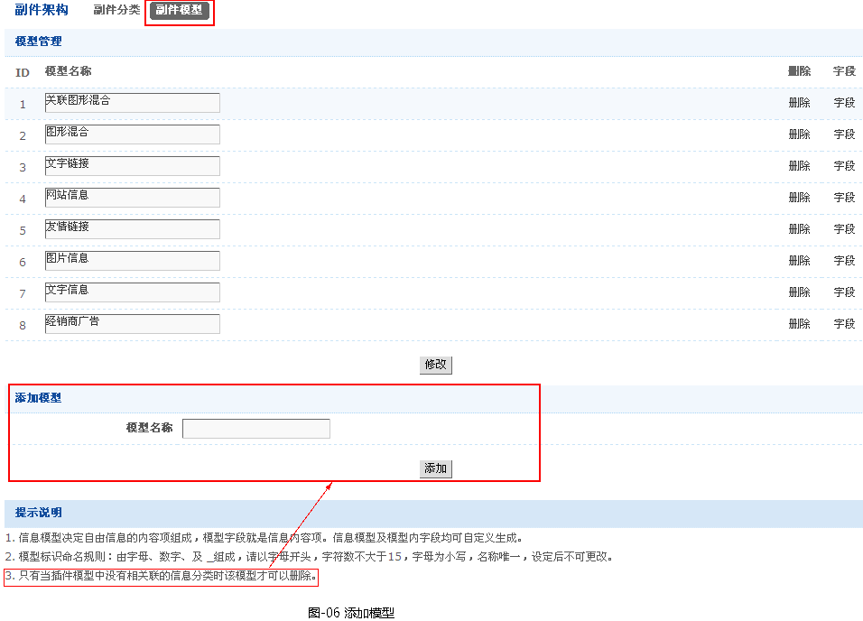
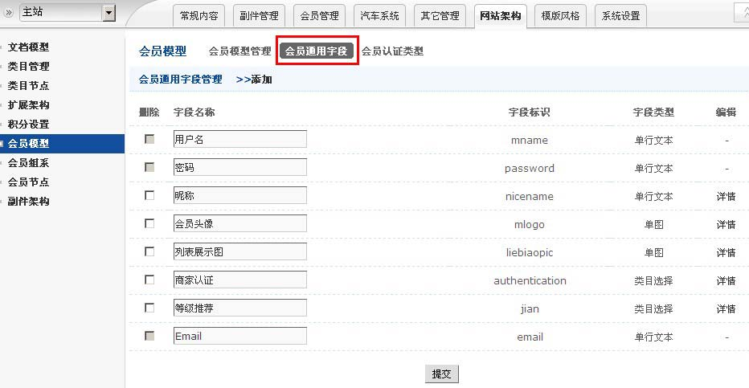
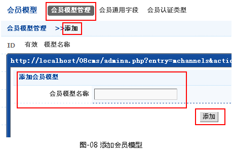
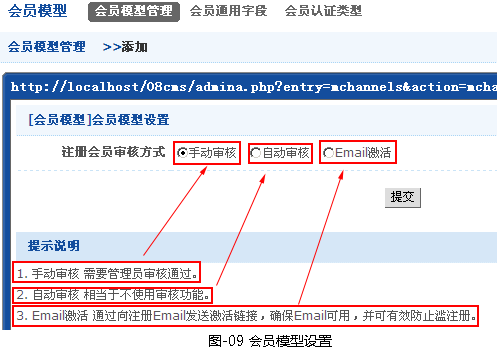

模型管理(文档模型，副件模型，会员模型)
一、前言
文档模型，决定文档的信息项组成，模型字段就是文档信息项。文档模型及模型内字段均可自定义生成。
副件模型，决定自由信息的内容项组成，模型字段就是信息内容项。信息模型及模型内字段均可自定义生成。
会员模型，决定会员信息的内容项组成，模型字段就是会员信息内容项。会员模型及模型内字段均可自定义生成。
- 管理文档模型有以下几个步骤：
-
文档模型通用字段
介绍一下通用字段[网站架构-->文档模型-->通用字段管理]，如图-06所示 。
1. 模型通用字段是在所有文档模型中通用的字段，允许自定义。
2. 新添加的通用字段在已有文档模型中自动添加，但是默认为无效，如需要启用，请对已有模型作相应设置。
3. 通用字段在不同的模型中允许有不同的参数设置。

文档模型
第一、添加模型（【网站架构】->文档模型->文档模型管理->添加），如图-01所示。

第二、添加完模型后，就会自动弹出文档模型基本设置信息，如图-02所示。

点击提交按钮后，就会文档模型管理列表中出现，若无出现，请刷新页面。
第三、点击用户相应模型字段，添加所需的字段。
1、先选择字段的类型，如图-03所示。
字段类型：字段类型决定了该信息编辑时所用表单控件。
单行文本、日期(时间戳)、日期(字串)、整数、小数：使用单行文本(text)输入控件。
日期分为时间戳及字串方式，前者只允许记录 1970 年1月1日00:00:00之后的时间以时间戳输出，后者不限时间以字串格式输出。
多行文本：使用文本区域(textarea)控件。
Html文本：使用Html编辑器。
单图、Flash、视频、单点下载：使用相应类型的单文件输入(包含本地上传)控件。
图集、Flash集、视频集、多点下载：使用相应类型的多文件输入(包含本地上传)控件。
单项选择、多项选择：使用列表选择控件(后者为多选)，需要定义相应的可选项内容。

2、然后添加文档模型字段的内容，如图-04所示。

4、根据用户需求，可以对字段管理中内容进行设置，如图-05所示。

- 管理副件模型有以下几个步骤：
-
第一、添加模型（【网站架构】->副件架构->副件模型->添加模型），如图-07所示。

第二、点击用户相应模型字段，添加字段。（这一步骤与文档模型中添加字段一样，就不介绍了）
-
首次添加模型前，先规划会员通用字段[网站架构-->会员模型-->会员通用字段]

第一、添加模型（【网站架构】->会员模型->会员模型管理->添加），如图-08所示。

第二、添加模型完毕后，就会弹出会员模型设置，根据用户需求，选择注册会员审核方式：手动审核、自动审核和Email激活，如图-09所示。

第三、点击用户相应模型字段，添加所需的字段。（这一步骤与文档模型中添加字段一样，就不介绍了）